![]()
%%{init:{'flowchart':{'useMaxWidth':true,'nodeSpacing':60,'rankSpacing':60},'themeVariables':{'fontSize':'22px'}}}%%
flowchart LR
A["Raw Data"] --> B["Histogram<br/>(Frequencies)"]
B --> C["PMF<br/>(Discrete Prob.)"]
B --> D["PDF<br/>(Continuous<br/>Density)"]
C --> E["CDF<br/>(Cumulative<br/>Prob.)"]
D --> E
Statistical Analysis
Lecture 5: Probability II
Discrete vs. Continuous Variables
Discrete Variables
- Finite, countable, non-negative integers
- Examples: number of children, dice rolls
Continuous Variables
- Infinitely many values within a range
- Often carry decimal points
- Examples: height, weight, temperature
Histograms
What Is a Histogram?
- Shows values and how often each appears
- Describes the distribution of a variable
- Works for both discrete and continuous data
- A complete description of the sample
Life Expectancy: Histogram
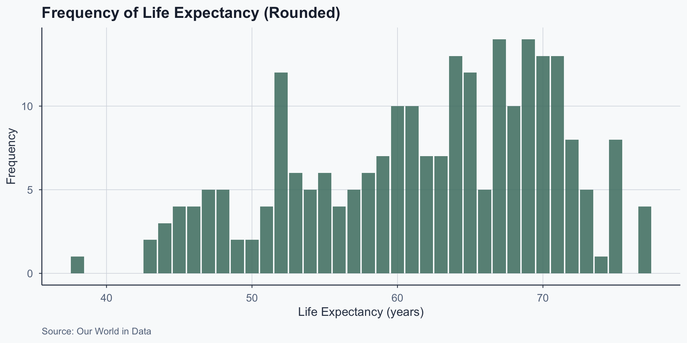
Figure 1: Distribution of average life expectancy by country
Probability Mass Functions
What Is a PMF?
- Shows the probability of each discrete value
- Divide each frequency by total observations \(n\)
- All probabilities must sum to 1
- Describes the probability distribution
PMF Example: Class Grades
Grades of 10 students: 30, 30, 30, 60, 60, 80, 80, 80, 90, 100
| Grade (\(x\)) | 30 | 60 | 80 | 90 | 100 |
|---|---|---|---|---|---|
| Frequency | 3 | 2 | 3 | 1 | 1 |
| \(\mathbb{P}(X=x)\) | 0.3 | 0.2 | 0.3 | 0.1 | 0.1 |
\(\mathbb{P}(X=30) = 0.3\): 30% chance of drawing grade 30.
PMF: Formal Definition
\[ \begin{aligned} f(x) &= \mathbb{P}(X=x) \quad \text{Each value has a probability}\\[0.3cm] f(x) &\geq 0 \quad \text{Probabilities cannot be negative}\\[0.3cm] \sum_{x} f(x) &= 1 \quad \text{All probabilities sum to 1} \end{aligned} \]
- PMF can be a formula, table, or figure
- Defined for every \(x\) in the support of \(X\)
PMF Example: Fair Coin Toss
Define \(X = 0\) (tails) and \(X = 1\) (heads).
\[ f(0) = \mathbb{P}(X = 0) = \tfrac{1}{2}, \quad f(1) = \mathbb{P}(X = 1) = \tfrac{1}{2} \]
| \(x\) | 0 | 1 |
|---|---|---|
| \(\mathbb{P}(X=x)\) | 0.5 | 0.5 |
PMF Example: Unfair Coin Toss
Define \(X = 0\) (tails) and \(X = 1\) (heads).
\[ f(0) = \mathbb{P}(X = 0) = \tfrac{1}{10}, \quad f(1) = \mathbb{P}(X = 1) = \tfrac{9}{10} \]
| \(x\) | 0 | 1 |
|---|---|---|
| \(\mathbb{P}(X=x)\) | 0.1 | 0.9 |
The Bernoulli Distribution
- Models experiments with exactly two outcomes
- Examples: coin toss, pass/fail, yes/no
\[ f(1) = \mathbb{P}(X=1) = p, \quad f(0) = \mathbb{P}(X=0) = 1-p \]
- \(p = 0.5\): fair coin (equally likely)
- \(p \neq 0.5\): biased coin
- Simplest PMF; building block for other models
PMF: General Definition
Variable \(X\) takes integer values from 1 to \(k\):
\[ \mathbb{P}(X = x) = p_x, \quad x = 1, 2, \dots, k \]
where \(p_x \geq 0\) and \(p_1 + p_2 + \dots + p_k = 1\).
Example: A 3-sided die —
\[ \mathbb{P}(X=1) = p_1, \quad \mathbb{P}(X=2) = p_2, \quad \mathbb{P}(X=3) = p_3 \]
Life Expectancy: PMF
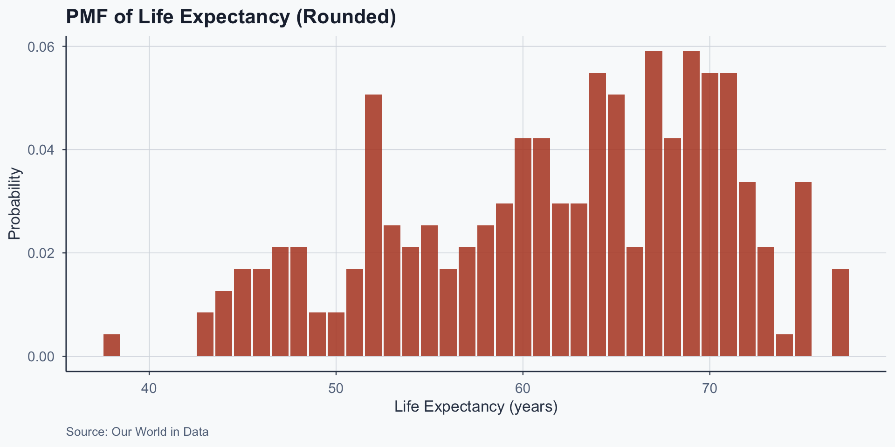
Figure 2: PMF of average life expectancy by country
Histogram vs. PMF
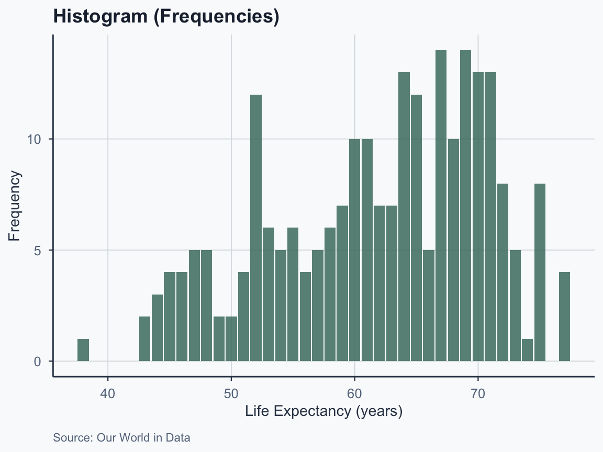
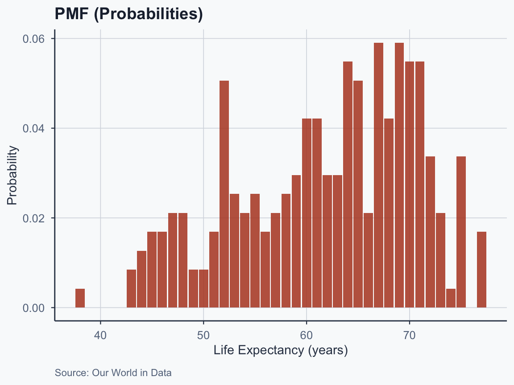
Limits of PMFs
- Work well when number of values is small
- As values increase, individual probabilities shrink
- Random noise becomes more apparent
- Solution: bin data into non-overlapping intervals
- Bin size is tricky: too large smooths signal
Binning in Action
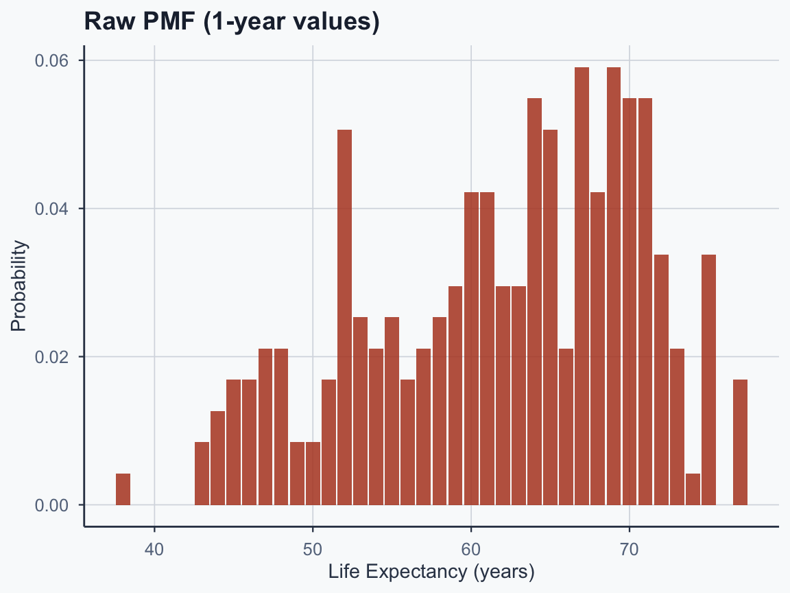
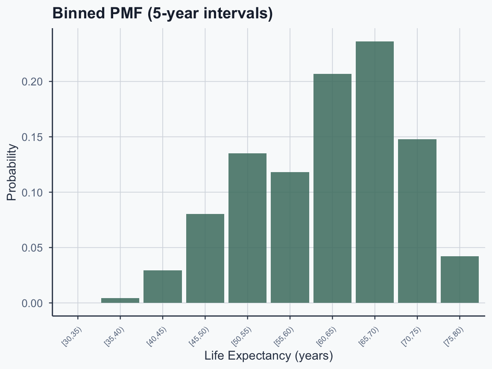
Binning smooths out noise — but what happens as bins get infinitely narrow? We get a PDF.
Probability Density Functions
From Discrete to Continuous
Discrete: PMF gives \(\mathbb{P}(X = x)\) for each value.
Continuous: there are infinitely many possible values.
- What is the probability someone is exactly 170.000… cm tall?
- Among infinite possible heights, any single value has probability zero
- \(\mathbb{P}(X = x) = 0\) for any exact value \(x\)
From Discrete to Continuous (cont.)
So if \(\mathbb{P}(X = x) = 0\), how do we talk about probability?
We ask about ranges instead:
- \(\mathbb{P}(169 \leq X \leq 171)\) — perfectly well-defined
- \(\mathbb{P}(X \leq 175)\) — this is the CDF
- The tool that computes these range probabilities is the PDF
What Is a PDF?
\[ \mathbb{P}(a \leq X \leq b) = \int_a^b f(x)\,dx \]
- \(f(x)\) is a density, not a probability
- Probabilities come from areas under the curve
- Taller curve at \(x\) means values near \(x\) more likely
Intuition: Histogram to PDF
A PDF is a smoothed-out histogram as bins get finer.
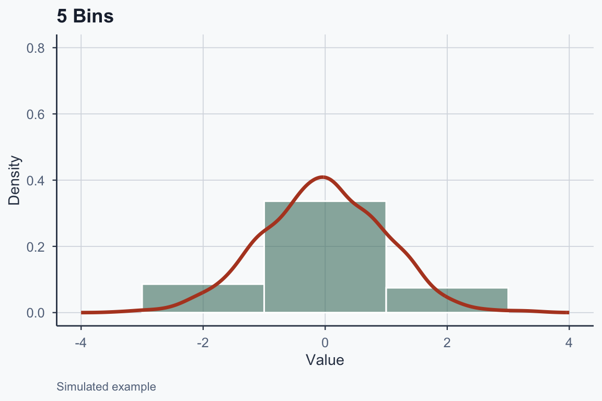
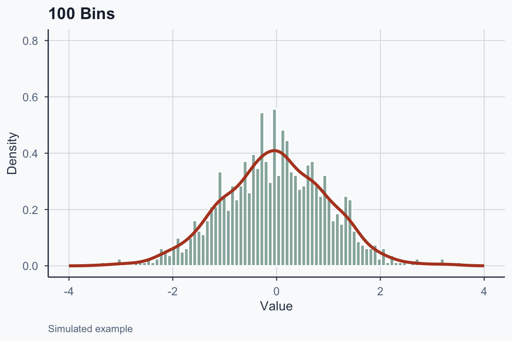
Properties of a PDF
- Non-negative: \(f(x) \geq 0\) for all \(x\)
- Total area equals 1: \(\int_{-\infty}^{\infty} f(x)\, dx = 1\)
- Probability of a range: \(\mathbb{P}(a \leq X \leq b) = \int_{a}^{b} f(x)\, dx\)
\(f(x)\) is not a probability — it gives relative likelihood near \(x\).
PDF: Total Area Equals 1
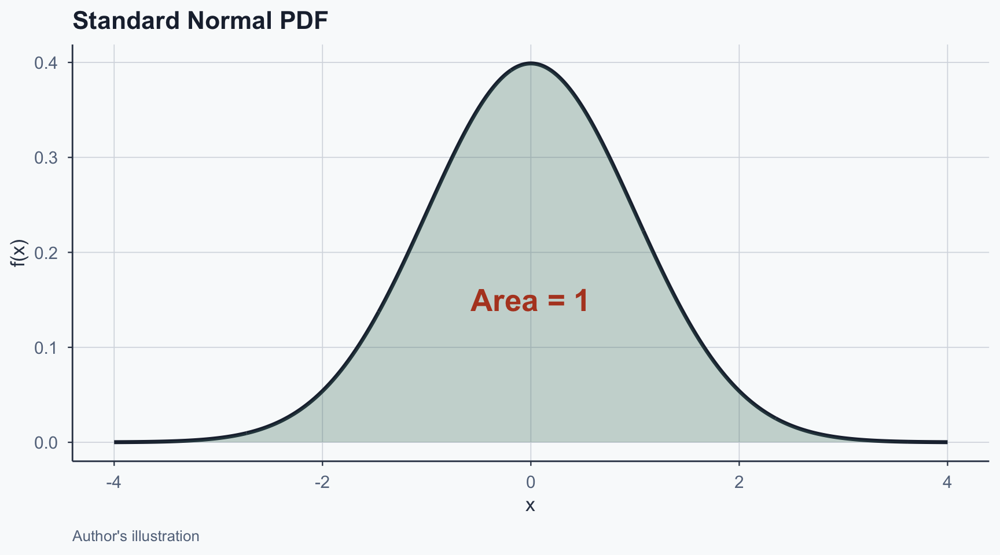
Figure 9: Total area under the PDF curve equals 1
PDF: Probability of a Range
For a standard normal \(N(0,1)\):
\[\mathbb{P}(-1 \leq X \leq 1) = \int_{-1}^{1} f(x)\, dx\]
- No closed-form solution; use R:
pnorm(1) - pnorm(-1) - Result: \(\approx 0.683\) — about 68.3% within 1 SD
PDF: Probability of a Range (Visual)
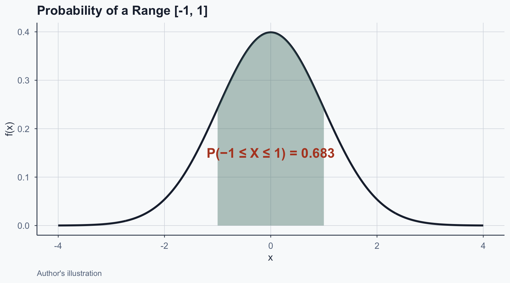
Figure 10: Shaded area gives interval probability
Normal Distribution
What Is the Normal Distribution?
Also called the Gaussian or bell curve.
- Symmetric about the mean
- Mean = Median = Mode at the center
- Bell-shaped: data concentrated around mean
- Spread determined by standard deviation
Normal Distribution: Formula
\[ f(x) = \frac{1}{\sigma \sqrt{2\pi}} \exp\!\left(-\frac{(x-\mu)^2}{2\sigma^2}\right) \]
- Two parameters: \(\mu\) (mean) and \(\sigma\) (std. dev.)
- \(\mu\) controls location (center of curve)
- \(\sigma\) controls spread (width of curve)
- \(\sigma^2\) is the variance
Effect of the Mean (\(\mu\))
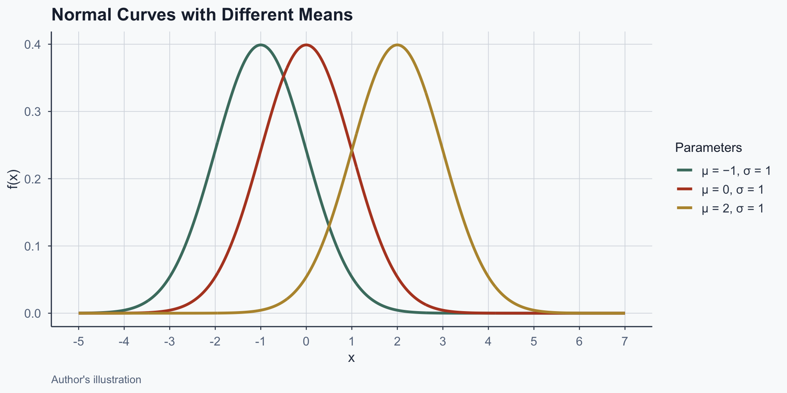
Figure 11: Changing the mean shifts the curve horizontally
Mean and Standard Deviation Annotated
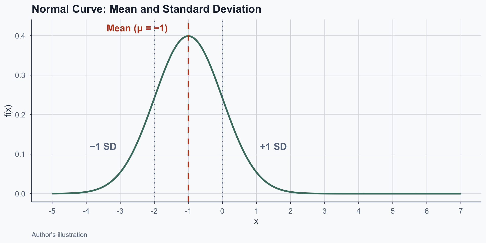
Figure 12: Mean and one standard deviation boundaries
Effect of Standard Deviation (\(\sigma\))
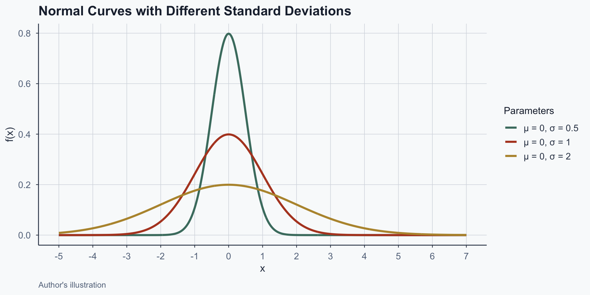
Figure 13: Larger sigma produces wider, flatter curves
The 68-95-99.7 Rule
For any normal distribution:
| Range | Probability |
|---|---|
| \(\mu \pm 1\sigma\) | 68.3% |
| \(\mu \pm 2\sigma\) | 95.4% |
| \(\mu \pm 3\sigma\) | 99.7% |
This is the empirical rule — the single most useful fact about normal distributions.
The 68-95-99.7 Rule (Visual)
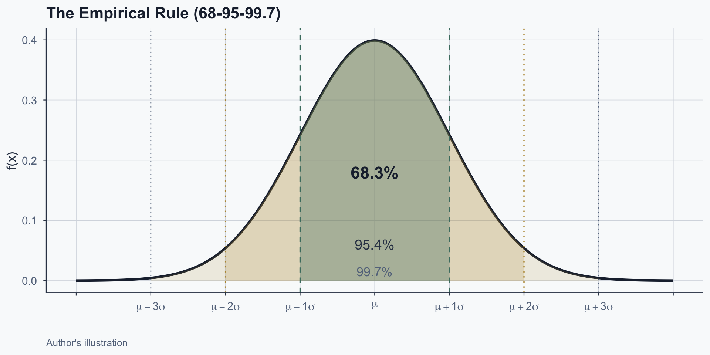
Figure 14: The empirical rule for the standard normal
Standard Normal Distribution
The standard normal has \(\mu = 0\) and \(\sigma = 1\):
\[N(0, 1)\]
- Any normal can be standardized to \(N(0,1)\)
- Reference distribution in statistics
- Foundation for hypothesis testing
Cumulative Distribution Functions
What Are Percentiles?
- Standardized tests report a percentile rank
- Fraction of scores at or below yours
- 90th percentile = scored \(\geq\) 90% of takers
Formula:
\[P = \frac{\text{No. values} \leq X}{\text{Total no. of values}} \times 100\]
Percentile Example
Scores: 55, 66, 77, 88, 99. You scored 88.
\[P = \frac{4}{5} \times 100 = 80\]
Four values (55, 66, 77, 88) are \(\leq\) 88 \(\Rightarrow\) percentile rank = 80.
What if you scored 77?
\[P = \frac{3}{5} \times 100 = 60\]
What Is a CDF?
- Maps values to their percentile rank (as probability)
- Gives \(\mathbb{P}(X \leq x)\) for any value \(x\)
- Works for both discrete and continuous variables
- Always increases from 0 to 1
CDF: How It Works
For any value \(x\), the CDF counts:
\[F(x) = \frac{\text{No. values} \leq x}{\text{Total no. of values}}\]
- Same idea as the percentile formula, but expressed as a probability \([0, 1]\)
- For continuous distributions, R computes this with
pnorm(x, mean, sd)
CDF Example: Three Coin Flips
Flip a fair coin 3 times. Total outcomes: \(2^3 = 8\).
| Heads (\(k\)) | 0 | 1 | 2 | 3 |
|---|---|---|---|---|
| Probability | 1/8 | 3/8 | 3/8 | 1/8 |
| Cumul. Prob. | 0.125 | 0.500 | 0.875 | 1.000 |
Each probability: \(P(X=k) = \binom{3}{k}\left(\frac{1}{2}\right)^3\)
CDF: Coin Flips Plot
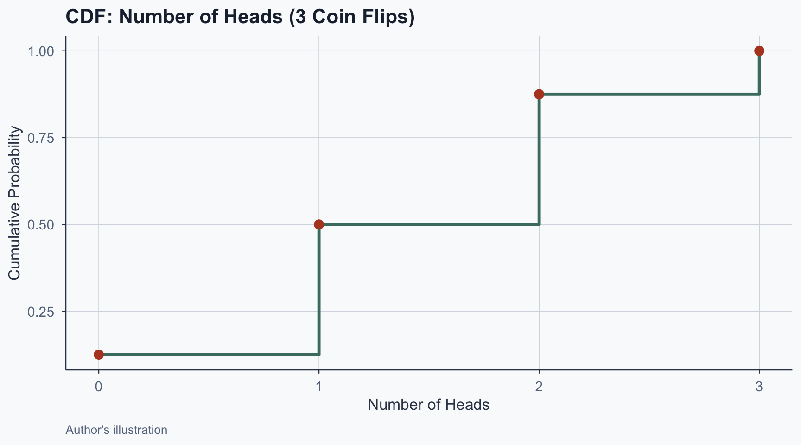
Figure 15: CDF for number of heads in 3 coin flips
CDF: Continuous Example (Height)
Heights modeled as \(N(\mu = 170,\; \sigma = 10)\) cm.
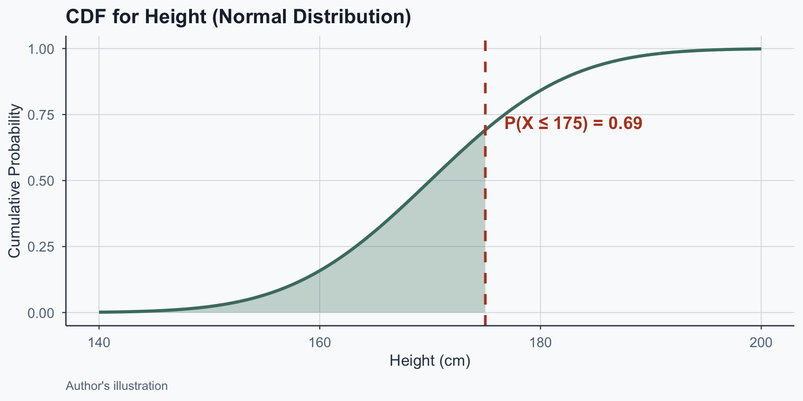
Figure 16: CDF for height: P(X <= 175) = 0.69
Life Expectancy: CDF
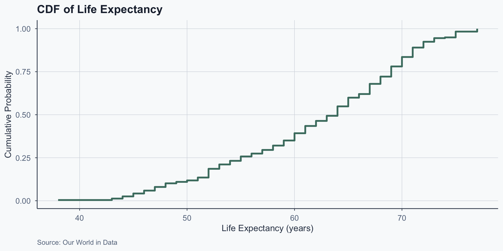
Figure 17: CDF of average life expectancy by country
PMF vs. PDF vs. CDF
| Function | Variable Type | Gives |
|---|---|---|
| PMF | Discrete | \(\mathbb{P}(X = x)\) |
| Continuous | Density at \(x\) | |
| CDF | Both | \(\mathbb{P}(X \leq x)\) |
Conclusion
What Can You Do Now?
- Quantify uncertainty: given a distribution, compute the probability of any range of outcomes
- Compare: the CDF lets you answer “what fraction falls below this threshold?” for any dataset
- Model: if data is approximately normal, two numbers (\(\mu\), \(\sigma\)) plus the 68-95-99.7 rule give you most of the picture
- Communicate: PMF, PDF, and CDF are the shared language for describing how variables behave
Next: we’ll use these tools in R with pnorm, qnorm, and dnorm.
Popescu (JCU) Statistical Analysis Lecture 5: Probability II